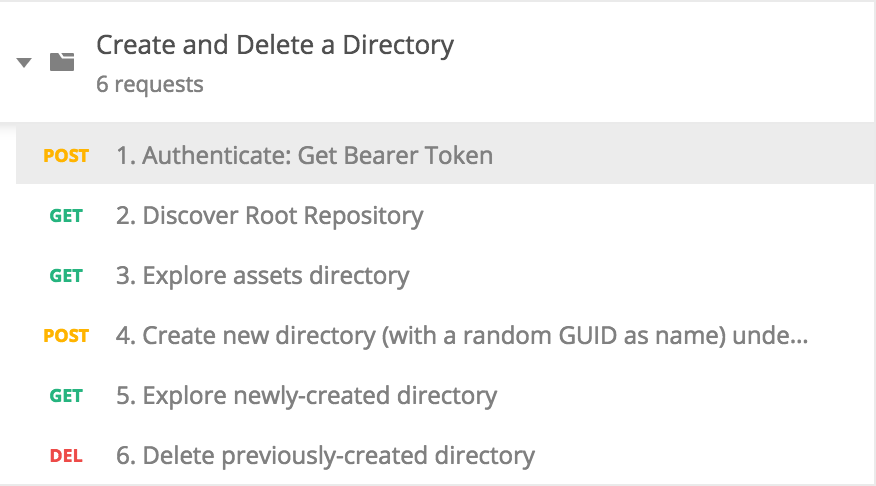
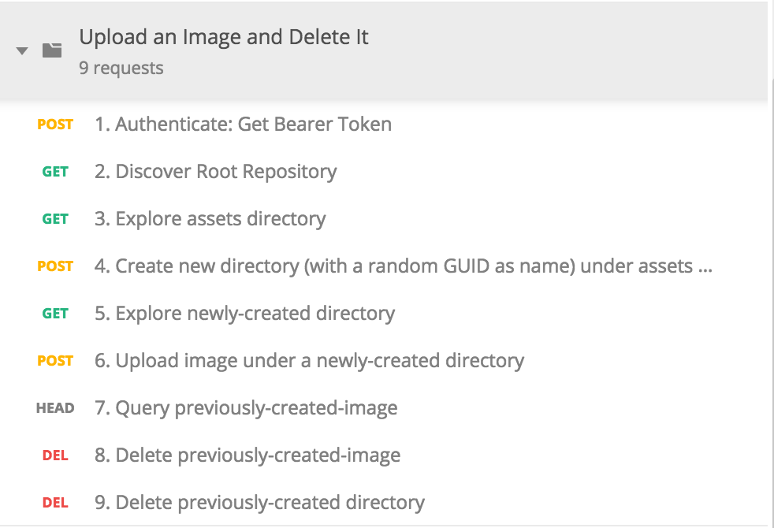

<style>
code {
	color: yellow;
}
</style>
<section>
	<h3>Introduction to the Platform API</h3>
	<h4>What You Need</h4>
	<ul>
		<li>📡 Wifi: TechSummit2019</li>
		<li>🔒 Connect to the Adobe VPN</li>
		<li>🔑 Credentials (I will hand these out in a bit)</li>
		<li>🛠 Some handy developer tools (on USB stick being passed around):
			<ul>
				<li>📨 Postman (<a href="http://getpostman.com">http://getpostman.com</a>),
					an HTTP helper tool</li>
				<li>💻 Postman Scripts (grab from <a href="https://git.corp.adobe.com/pages/devrel/acpapi-quickstart/#http-requestresponse-samples">https://git.corp.adobe.com/pages/devrel/acpapi-quickstart/#http-requestresponse-samples</a></li>
			</ul>
		</li>
	</ul>
</section>
<section>
	<h2>Agenda</h2>
	<ol>
	    <li>📋 Overview of Platform API Capabilities (2 minutes)</li>
		<li>💡 Key Platform API Concepts (5 minutes)</li>
		<li>🔑 Authentication (5 minutes)</li>
		<li>🔍 Exploring Content (5 minutes)</li>
		<li>🗂 Working with Assets (10 minutes)</li>
		<li>🖼 Introducing Renditions (if we have time)</li>
	</ol>
</section>
<section>
	<h3>📋 Overview of Platform API Capabilities</h3>
	<ul>
		<li class="fragment">🗄<b>Storage</b>: store and retrieve assets</li>
		<li class="fragment">🗂<b>Organization and Permissions</b>:
			filesystem-like directory hierarchy with customizable access control</li>
		<li class="fragment">🖼<b>Renditions</b>: dynamic asset modification</li>
		<li class="fragment">✨<b>and lots more!</b> (but we will focus on the
			above in this workshop)</li>
	</ul>
</section>
<section>
	<h3>💡 Key Platform API Concepts</h3>
	<p>There are two and a half key concepts required to internalize to be
	successful with the Platform API.</p>
</section>
<section>
	<h3>💡 Key Platform API Concept #1</h3>
	<h4>Content Organization</h4>
	<p class="fragment">🗂 All assets are organized into directories, similar to a traditional
	desktop file system hierarchy.</p>
</section>
<section>
	<h3>💡 Key Platform API Concept #2</h3>
	<h4>Links, not URLs</h4>
	<p class="fragment">⛓  Whenever you query the API for a particular resource, you will get
	<u>links</u> that point you to available operations on the resource.</p>
	<p class="fragment">URLs are obfuscated, so don't read into them.</p>
</section>
<section>
	<h3>💡 Key Platform API Concept #2.5</h3>
	<h4>Links, not URLs</h4>
	<p>Therefore a typical flow for interacting with the API is:</p>
	<ol>
		<li class="fragment">🔍 Query a resource (say, your root directory)</li>
		<li class="fragment">⛓  Based on the response, see available
			sub-resources (i.e. children of directory), or inspect (directory) <u>links</u>
		to see available operations (on the directory)</li>
		<li class="fragment">🛀 Rinse and repeat: Follow up with another query, following either
			links or children</li>
	</ol>
</section>
<section>
	<h4>🔑 Authentication</h4>
	<p style="font-size: 75%;">We have set up test accounts for you all. We use credentials for
	these test accounts, together with api keys and client secrets, to create an
	<i>access token</i> that gives us access to the Platform API.</p>
	<ol>
		<li>First, choose an account. All account emails follow the form
			<code>maj+acp{robot}@adobetest.com</code> where available robots are:
			<code>golem</code>, <code>talus</code>, <code>olympia</code>,
			<code>hadaly</code>, <code>zat</code>, <code>gnut</code>,
			<code>jenkins</code>, <code>speedy</code>, <code>norby</code>,
			<code>bors</code>, <code>frost</code> and <code>chip</code>.</li>
		<li>Password for all of these accounts is <code>TechSummit20!9</code></li>
		<li>All of the other credentials are pre-packaged in the Postman
			collections</li>
	</ol>
</section>
<section>
	<h3>Using Postman</h3>
	<ul>
		<li>We will use Postman to run through scenarios, or
	scripts, that interact with the Platform API, showing off its
	capabilities.</li>
		<li class="fragment">So load up Postman and the first Script: "Create and
	Delete a Directory"</li>
		<li class="fragment">Make sure you customize the email and password in
			Postman's Environment Variables! (let me show you how to do that)</li>
	</ul>
</section>
<section>
	<h3>🔍 Exploring Content</h3>
	
</section>
<section>
	<h3>🗂 Working with Assets</h3>
	<p>Next, load up the "Upload an Image and Delete It" collection.</p>
	
</section>
<section>
	<h3>🖼 Introducing Renditions</h3>
	<p>Finally, load up the "Upload an Image and Get a Rendition" collection.</p>
	
</section>
<section>
	<h3>That's It!</h3>
	<p>Thanks for attending!</p>
	<h4>Further Resources</h4>
	<ul>
		<li>ACP API Quickstart: <a
									href="https://git.corp.adobe.com/pages/devrel/acpapi-quickstart">https://git.corp.adobe.com/pages/devrel/acpapi-quickstart</a></li>
		<li>ACP API HTTP Reference: <a
									href="https://git.corp.adobe.com/pages/devrel/acpapi-http-reference">https://git.corp.adobe.com/pages/devrel/acpapi-http-reference</a></li>
	</ul>
</section>
